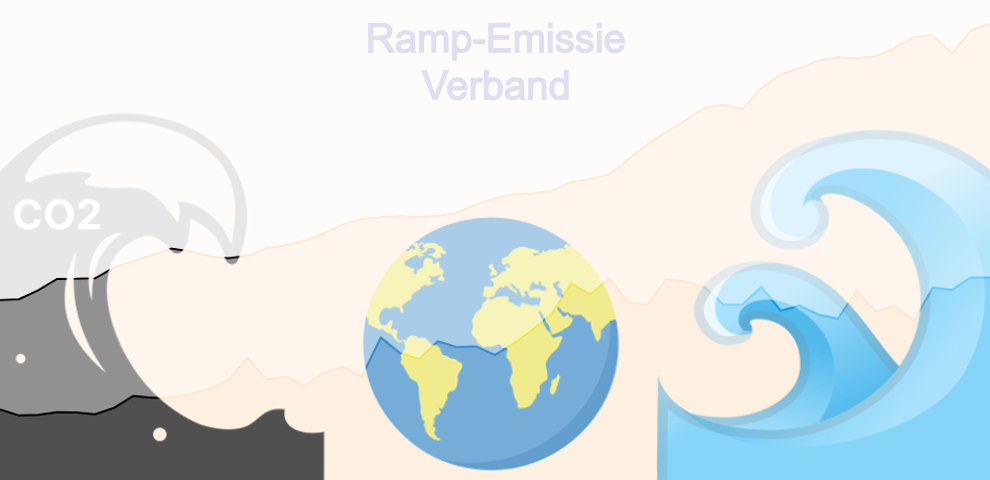

Milieugevolgen van de Uitstoot van Broeikasgassen#

---------------------------------------------------------------------------
KeyError Traceback (most recent call last)
File ~/miniconda3/lib/python3.12/site-packages/pandas/core/indexes/base.py:3805, in Index.get_loc(self, key)
3804 try:
-> 3805 return self._engine.get_loc(casted_key)
3806 except KeyError as err:
File index.pyx:167, in pandas._libs.index.IndexEngine.get_loc()
File index.pyx:196, in pandas._libs.index.IndexEngine.get_loc()
File pandas/_libs/hashtable_class_helper.pxi:7081, in pandas._libs.hashtable.PyObjectHashTable.get_item()
File pandas/_libs/hashtable_class_helper.pxi:7089, in pandas._libs.hashtable.PyObjectHashTable.get_item()
KeyError: 'Substance'
The above exception was the direct cause of the following exception:
KeyError Traceback (most recent call last)
Cell In[1], line 16
13 nd_df = nd_df[nd_df['Year'] != 2024]
15 # emissions only all per year
---> 16 ghg_all_df = ghg_df[ghg_df['Substance'] == 'ALL'][['Year', 'Emissions']]
18 # emissions excluding all per year
19 ghg_ex_df = ghg_df[ghg_df['Substance'] != 'ALL']
File ~/miniconda3/lib/python3.12/site-packages/pandas/core/frame.py:4102, in DataFrame.__getitem__(self, key)
4100 if self.columns.nlevels > 1:
4101 return self._getitem_multilevel(key)
-> 4102 indexer = self.columns.get_loc(key)
4103 if is_integer(indexer):
4104 indexer = [indexer]
File ~/miniconda3/lib/python3.12/site-packages/pandas/core/indexes/base.py:3812, in Index.get_loc(self, key)
3807 if isinstance(casted_key, slice) or (
3808 isinstance(casted_key, abc.Iterable)
3809 and any(isinstance(x, slice) for x in casted_key)
3810 ):
3811 raise InvalidIndexError(key)
-> 3812 raise KeyError(key) from err
3813 except TypeError:
3814 # If we have a listlike key, _check_indexing_error will raise
3815 # InvalidIndexError. Otherwise we fall through and re-raise
3816 # the TypeError.
3817 self._check_indexing_error(key)
KeyError: 'Substance'
De wereld wordt steeds meer bedreigd door natuurrampen, een probleem dat verergerd wordt door de groeiende uitstoot van broeikasgassen. Mensen die in kwetsbare gebieden wonen, zijn ervan overtuigd dat de toename in frequentie en hevigheid van deze rampen direct verband houdt met de stijgende emissies. Dit heeft verwoestende effecten op hun levens, eigendommen en lokale economieën. Studies tonen aan dat broeikasgassen, veroorzaakt door menselijke activiteiten, de klimaatverandering versnellen. Dit leidt tot extremere weersomstandigheden zoals overstromingen en hittegolven. Anderen beweren echter dat veel van deze veranderingen te wijten zijn aan natuurlijke variaties in het klimaat en dat de impact van broeikasgassen wordt overdreven en dat adaptieve strategieën en technologieën voldoende zijn om eventuele negatieve effecten te mitigeren. Deze uiteenlopende perspectieven suggereren dat er verschillen in interpretatie en prioriteit zijn bij het aanpakken van de gevolgen van klimaatverandering.
Als belangrijkste databronnen gebruiken we de EDGAR-dataset, die ons gedetailleerde informatie verstrekt over de uitstoot van broeikasgassen van 1970-2022. Daarnaast maken we gebruik van een dataset die gegevens bevat over het aantal en de soorten natuurrampen die hebben plaatsgevonden van 1900-2024. Om de correlatie tussen natuurrampen en de uitstoot van broeikasgassen te begrijpen en te onderzoeken, zullen we factoren zoals emissies, natuurrampen en de Pearson-correlatiecoëfficiënt tussen de twee analyseren. Verder zullen we relevante literatuur raadplegen om de verschillende argumenten te onderbouwen.
Trends in natuurrampen#
Uit de stacked bar plot blijkt duidelijk dat de frequentie van natuurrampen de afgelopen jaren aanzienlijk is toegenomen (zie Figuur 1). Bij analyse van de grafiek valt op dat er tussen 1970 en 2000 een aanzienlijke stijging was in het aantal rampen per jaar, met opvallende pieken rond 2000 en 2010. Na 2000 stabiliseert het aantal rampen echter, zonder de sterke stijging die in de voorgaande jaren te zien was. Overstromingen en extreem weer vertoonden de grootste stijgingen, wat een aanzienlijk deel van de totale toename van rampen verklaart. Andere rampen, zoals aardbevingen en vulkanische activiteit, lieten een kleinere toename zien.
Figuur 1: Deze grafiek toont het aantal natuurrampen van het jaar 1970-2022, onderverdeeld naar type ramp met behulp van kleuren. Beweeg de muis erover om het precieze aantal rampen te zien.
Wanneer we het aantal rampen per type weergeven in een donut chart (zie Figuur 2), blijkt dat extreem weer en overstromingen elk jaar een aanzienlijk deel van de natuurrampen vormen in vergelijking met andere typen rampen. Dit verschil wordt steeds groter door de jaren heen. Vooral overstromingen zijn sinds 2006 aanzienlijk toegenomen ten opzichte van de andere natuurrampen.
Figuur 2: De grafiek toont de verdeling van natuurrampen in een donut chart met percentages per ramp. Bij hover zie je de precieze aantallen. Met de slider bekijk je de jaarlijkse verdeling. Aan het einde van de slider zie je de cumulatieve verdeling van 1970 tot 2022.
Deze figuren laten zien dat weergerelateerde rampen, zoals overstromingen en extreem weer, de afgelopen decennia het sterkst zijn toegenomen. Dit sluit aan bij het algemene wetenschappelijke standpunt dat klimaatverandering, veroorzaakt door verhoogde broeikasgasemissies, de frequentie en ernst van weergerelateerde gebeurtenissen verergert (Ramón et al., 2015). Andere rampen, zoals aardbevingen en vulkanische activiteit, die minder vaak voorkomen (zie Figuur 2), vertoonden een kleinere toename. Rampen die direct gekoppeld zijn aan klimaatverandering, zoals overstromingen en extreem weer, zijn daarentegen aanzienlijk sterker gestegen.
Figuur 2 laat ook zien dat het aantal overstromingen tussen 2006 en 2022 een aanzienlijk groter percentage van het totale aantal rampen uitmaakt in vergelijking met de periode van 1970 tot 2000. Dit ondersteunt de theorie dat verhoogde broeikasgasemissies, die bijdragen aan klimaatverandering, verantwoordelijk zijn voor de toename van weergerelateerde rampen, met name overstromingen.
De gegevens uit figuur 1 laten ook zien dat het aantal natuurrampen tussen 2000 en 2022 niet verder is gestegen, ondanks de voortdurende toename van broeikasgasemissies (zie Figuur 3). Deze stabilisatie kan de indruk wekken dat er geen directe correlatie is tussen de stijgende emissies en het aantal rampen. Dit kan verschillende verklaringen hebben, zoals verbeterde aanpassings- en preventiemaatregelen, verbeterde infrastructuur en technologische vooruitgang die de impact van dergelijke rampen kunnen beperken of voorkomen. Een goed voorbeeld hiervan is Nederland, waar uitgebreide dijken en waterbeheersystemen effectief zijn gebleken in het voorkomen van overstromingen, ondanks de stijgende zeespiegel en hevige regenval als gevolg van klimaatverandering.
Groei van emissies#
Een belangrijke factor om te overwegen is de groei van de broeikasgasuitstoot. In 1970 bedroeg de totale broeikasgasuitstoot ongeveer 27 gigaton. Hoewel er af en toe dalingen waren, is de uitstoot over het algemeen aanzienlijk gestegen van 1970 tot 2022. In 2022 bedroeg de totale broeikasgasuitstoot ongeveer 53 gigaton, wat meer dan een verdubbeling ten opzichte van 1970.
Figuur 3: Deze grafiek laat de trends zien in broeikasgasemissies van 1970 tot 2022. Over het algemeen vertoont de grafiek een toename van de broeikasgasuitstoot. Met name valt op dat de stijging tussen 2000 en 2022 aanzienlijk sterker is dan tussen 1970 en 2000.
Ondanks de enorme stijging in broeikasgasuitstoot, toont figuur 1 aan dat de groei van het aantal natuurrampen beperkt is gebleven. De grafiek laat zien dat er na 2000 weliswaar een minimale stijging is in het aantal natuurrampen, maar deze stijging is niet in verhouding met de toename van de broeikasgasuitstoot. Dit suggereert dat het aantal natuurrampen niet sterk is beïnvloed door de groei van de broeikasgasuitstoot.
De mogelijke gevolgen van emissieproductie door de sectoren#
In een tijdperk waarin klimaatverandering een van de grootste uitdagingen vormt, is het essentieel om te begrijpen hoe verschillende sectoren bijdragen aan de uitstoot van broeikasgassen en de daaruit voortvloeiende natuurrampen. De energietransitie, de afvalverwerking, en het transport zijn enkele van de sleutelsectoren die verantwoordelijk zijn voor significante emissieproductie.
Figuur 4: De grafiek toont de uitstoot van broeikasgassen per sector van 1970 tot 2022, met sectoren zoals landbouw, gebouwen, brandstofwinning, industriële verbranding, de energiesector, processen, transport en afval.
Duidelijke trends zijn zichtbaar: de energiesector vertoont een significante toename in uitstoot, terwijl sectoren als afval en bouw relatief stabiel zijn gebleven.
De grafiek biedt inzicht in de historische ontwikkelingen van de broeikasgasuitstoot per sector. Deze informatie is cruciaal voor het ontwikkelen van strategieën tegen klimaatverandering en helpt beleidsmakers en onderzoekers om beter geïnformeerde beslissingen te nemen.
Natuurrampen hebben diverse oorzaken. Zo kunnen bijvoorbeeld olieboringen aardbevingen veroorzaken. Om te begrijpen hoe emissies uit verschillende sectoren samenhangen met diverse typen rampen, onderzoeken we de Pearson-correlatie tussen emissies per sector en het voorkomen van deze rampen.
De Pearson-correlatie meet de sterkte en richting van de lineaire relatie tussen twee variabelen. Een waarde van 1 betekent een perfecte positieve correlatie, -1 een perfecte negatieve correlatie, en 0 betekent geen lineaire correlatie. Deze methode helpt ons te begrijpen of en hoe sterk emissies uit verschillende sectoren gerelateerd zijn aan het optreden van natuurrampen.
Figuur 5: De grafiek toont de Pearson-correlatiecoëfficiënten tussen verschillende typen natuurrampen en de emissies per sector. De correlaties geven aan hoe sterk de relatie is tussen de uitstoot in een specifieke sector en het optreden van een bepaald type ramp. Met de knop kun je selecteren welke sector je wilt bekijken. Hogere waarden duiden op een sterkere positieve correlatie.
Extreem weer en overstromingen hebben consequent de hoogste positieve correlaties in meerdere sectoren, waaronder landbouw, brandstofwinning, industriële verbranding, de energiesector, processen, transport en afval. Dit wijst erop dat deze sectoren de grootste invloed hebben op deze rampen. In de landbouwsector vertonen extreem weer en overstromingen de grootste correlatie, terwijl droogte een gematigde positieve correlatie heeft.
Bij de gebouwen zijn aardbevingen en extreem weer het meest invloedrijk. Over het geheel genomen benadrukken de grafieken dat extreem weer en overstromingen de grootste bedreigingen vormen voor diverse economische sectoren, wat cruciale informatie biedt voor beleidsmakers en onderzoekers bij het ontwikkelen van veerkracht strategieën.
Hoewel de Pearson correlatiecoëfficiënten een positief verband laten zien, kunnen we echter niet concluderen dat natuurrampen worden veroorzaakt door broeikasgassen, aangezien de correlatiecoëfficiënten vaak een erg lage waarde hebben.
Andere mogelijke oorzaken#
De oorzaken van natuurrampen zijn complex en kunnen niet eenvoudig worden vastgesteld. Naast de uitstoot van broeikasgassen per sector zijn er andere mogelijke factoren die natuurrampen kunnen veroorzaken, zoals aardbevingen door olieboringen en droogte door ontbossing. Door de onderstaande grafiek te bekijken, krijgen we een duidelijk overzicht van de veranderingen in het aantal aardbevingen en de olieproductie in de periode 1970-2014.
Figuur 6: De grafiek toont de olieproductie (zwarte lijn) en het aantal aardbevingen (groene lijn) van 1970 tot 2015, waarbij de linker y-as de olieproductie en de rechter y-as het aantal aardbevingen weergeeft. De lijnen en punten geven de jaarlijkse trends en waarden weer, met kleurcodering voor onderscheid. B staat voor miljard.
De grafiek laat zien dat zowel het aantal aardbevingen als de olieproductie op vergelijkbare manier schommelen. Een toename in olieproductie resulteert in een stijging van het aantal aardbevingen in de daaropvolgende jaren. Bovendien is aangetoond dat mijnbouwactiviteiten, waaronder olieboring en steenkoolproductie, op lange termijn invloed hebben op aardbevingen (Witkowski et al., 2024). Om verdere correlaties te onderzoeken en een betere vergelijking te maken met de invloed van broeikasgassen per sector op het aantal natuurrampen, berekenen we in dit geval ook de bijbehorende Pearson-correlatiecoëfficiënt. In dit geval is de coëfficiënt 0.400, wat een positief verband aangeeft en tevens hoger is dan de coëfficiënten van alle eerder besproken sectoren.
Is er een relatie?#
Vanaf het jaar 1970-2000 is het aantal natuurrampen extreem hard gestegen. Na het jaar 2000 is het aantal natuurrampen ongeveer gelijk gebleven, terwijl de broeikasgasuitstoot bleef toenemen. Deze grafiek laat het verband zien tussen natuurrampen en de broeikasgasuitstoot door de jaren heen.
Figuur 7: Deze grafiek toont de relatie tussen jaarlijkse broeikasgasemissies en het aantal natuurrampen van 1970 tot 2022.
Elk punt vertegenwoordigt een jaar, waarbij de kleurgradaties de tijdsprogressie aangeven.
Uit de grafiek blijkt dat zowel de broeikasgasuitstoot als het aantal natuurrampen toenam in de eerste paar jaren (1970-2000). Dit is te zien aan de kleurgradaties: de donkere kleuren (vroegere jaren) bevinden zich links met lagere waarden, terwijl de lichtere kleuren (latere jaren) rechts en hoger zijn, wat hogere waarden aangeeft. In de daaropvolgende jaren neemt de broeikasgasuitstoot nog steeds sterk toe, maar het aantal natuurrampen niet. Zoals te zien is in de grafiek blijven de punten ongeveer gelijk op de y-as, terwijl de kleur verandert van groen naar geel.
Vanuit de analyse van de gegevens over natuurrampen en broeikasgasemissies kunnen twee uiteenlopende conclusies worden getrokken. Ten eerste, wanneer we de periode van 1970 tot 2000 onder de loep nemen, blijkt dat de uitstoot van broeikasgassen een significante invloed heeft op de frequentie en intensiteit van natuurrampen. Gedurende deze dertig jaar is er een duidelijke correlatie waarneembaar tussen de stijging van broeikasgasemissies en de toename van natuurrampen zoals overstromingen en extreme temperaturen. De data suggereren dat de opwarming van de aarde, als gevolg van verhoogde broeikasgas concentraties, een directe rol speelt in het verergeren van deze natuurrampen.
In contrast hiermee, de periode van 2000 tot 2022 laat een ander beeld zien. In deze recente periode lijkt de uitstoot van broeikasgassen een minimale invloed te hebben op de frequentie en intensiteit van natuurrampen. Ondanks een voortdurende stijging van de broeikasgasemissies, is er geen duidelijke toename in het aantal natuurrampen.
Samenvatting#
De analyse toont aan dat natuurrampen, met name overstromingen en extreem weer, aanzienlijk zijn toegenomen van 1970 tot 2000, maar na 2000 gestabiliseerd zijn ondanks de stijgende uitstoot van broeikasgassen. Dit suggereert dat hoewel emissies bijdragen aan klimaatgerelateerde rampen, andere factoren zoals verbeterde aanpassingsmaatregelen hun impact kunnen verminderen. Emissies per sector correleren ook met verschillende soorten rampen, waarbij de energie- en landbouwsectoren de hoogste positieve correlaties vertonen. Over het algemeen waarnemen we echter lage positieve Pearson-correlaties, waardoor we geen definitieve conclusies kunnen trekken. Hoewel er na 2000 veel meer natuurrampen waren dan in de jaren ervoor, bleven de emissies redelijk geleidelijk stijgen. De complexe aard van rampen en andere invloedsfactoren, zoals olieproductie die tot aardbevingen leidt, geven aan dat emissies alleen de frequentie en intensiteit van natuurrampen niet volledig verklaren.
Referenties#
Ramón, L. V., Thomas, V., & Pablo, T. A. (2015, 1 december). Climate change and natural disasters. https://repositorio.uchile.cl/handle/2250/138715
Witkowski, W. T., Łucka, M., Guzy, A., Sudhaus, H., Barańska, A., & Hejmanowski, R. (2024). Impact of mining-induced seismicity on land subsidence occurrence. Remote Sensing Of Environment, 301, 113934. https://doi.org/10.1016/j.rse.2023.113934